B100IARU (2025-05-06) - Voice Repeater - SWL via PO-101 (Paper)
BA8AFK (2025-11-09) - FM (paper) (BA8AFK confirmed my SWL via SO-124)
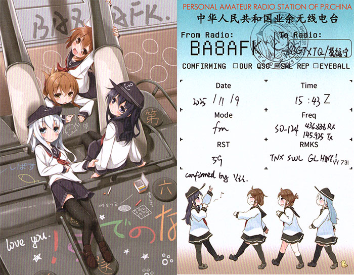
BA8AFK (2025-11-09) - FM (paper) (BA8AFK confirmed my SWL via SO-124)
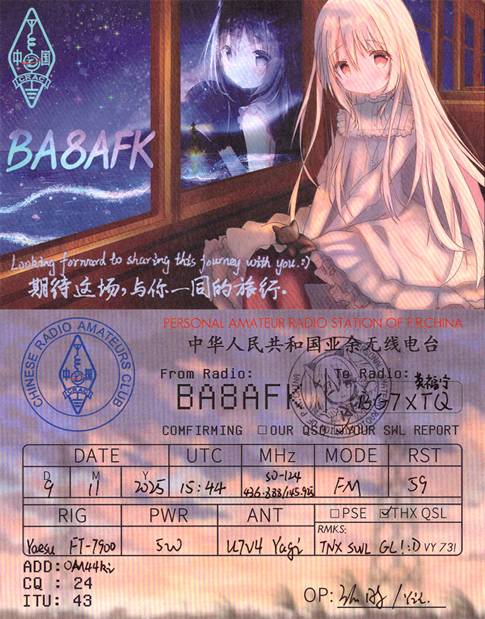
BG7RUF (2026-02-09) - FM (digital) (BG7RUF confirmed my QSO via SO-125)
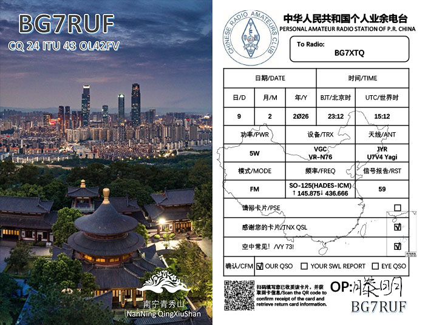
VORW Radio International. (2025-12-04) - AM (digital)
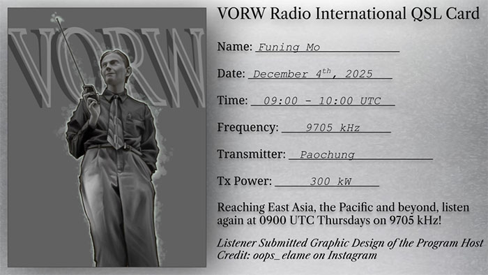
VORW Radio International. (2025-11-13) - AM (digital)
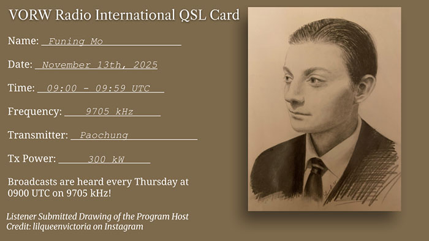
VORW Radio International. (2025-11-06) - AM (digital)
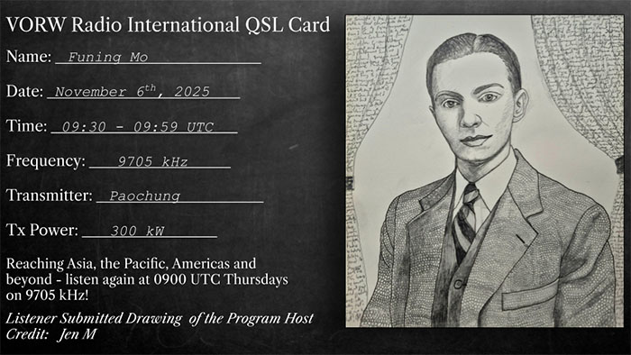
Diwata-2 (PO-101) (2024-11-25) - FM (digital) (Philippine Space Agency confirmed my QSO with BG7QOA)
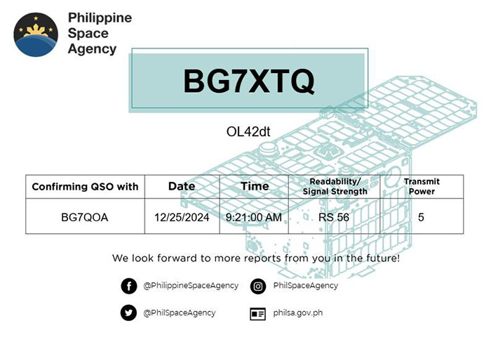
Texas Radio Shortwave (2025-10-31) - AM - Program: 2025 Texas Halloween Music (digital)
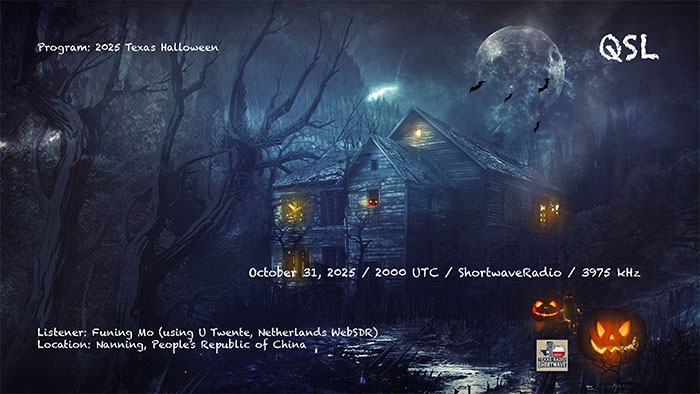
Texas Radio Shortwave (2025-10-08) - AM - Program: Music of B.J. Thomas (digital)
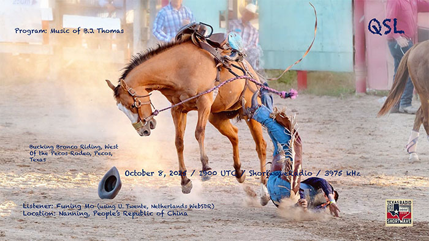
Texas Radio Shortwave (2025-08-03) - AM - Program: Music of Bobby Fuller Four (digital)
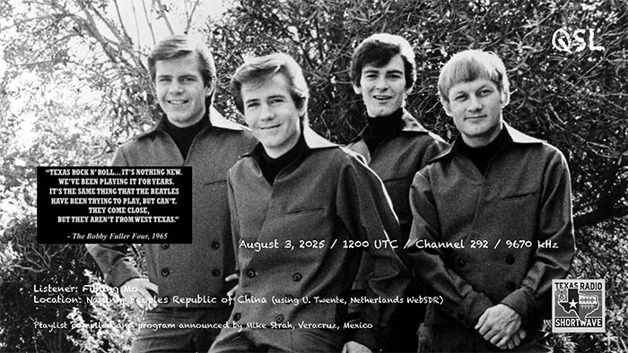
Texas Radio Shortwave (2025-07-04) - AM - Program: Music of Albert Collins (digital)
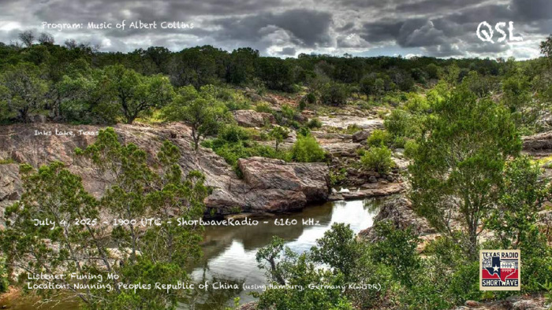
SAQ (2025-12-24) - CW - Christmas Eve Morning Transmission, December 24th 2025 event (digital)
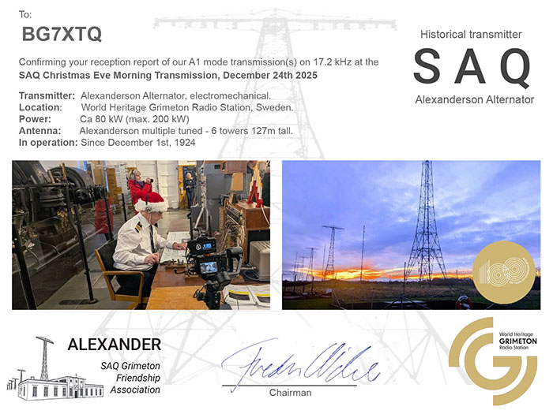
SAQ (2025-10-24) - CW - UN-Day Oct 24th, 2025 Event (digital)
SAQ 100 Year Anniversary Transmissions (2025-07-02) - CW (digital)
Texas Radio Shortwave (2025-06-06) - AM - Program: Music of Kris Kristofferson (digital)
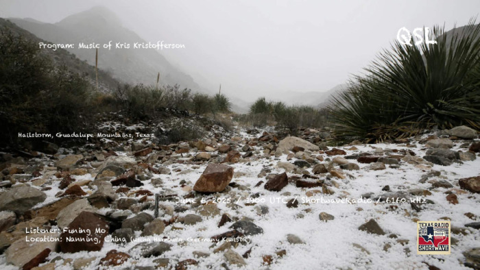
BPM (2025-03-07) 15MHz - AM (paper)
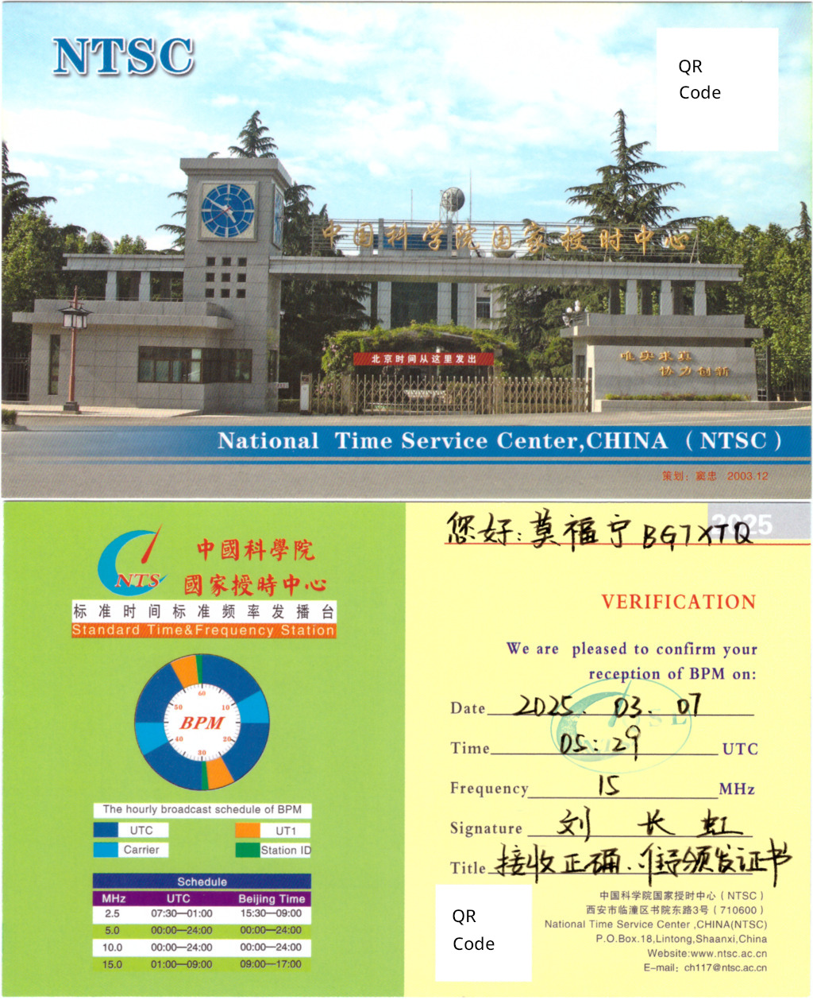
XSG (2025-02-13) - CW - Special Event "120 Years of XSG: Special World Radio Day" (paper)
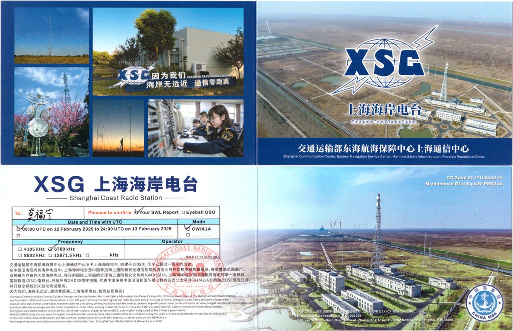
Diwata-2 (PO-101) (2025-05-06) - QSO as SWL (digital) [Time (UTC): 10:05:00AM (!)]